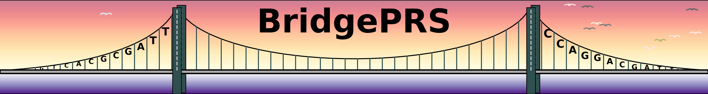
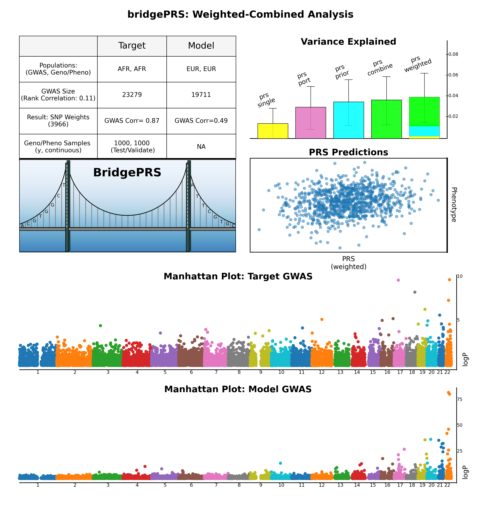
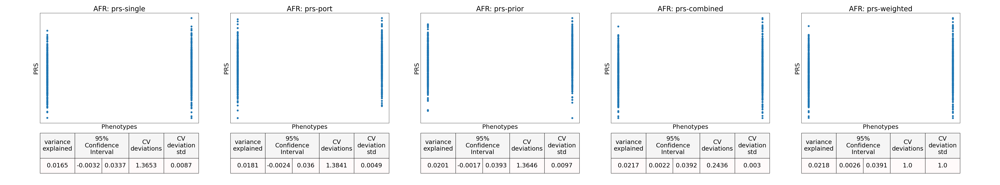

Configuration Files
After installing and verfying the requirements, verify the contents of the configuration files used in this tutorial:
POP=AFR
LDPOP=AFR
SUMSTATS_PREFIX=pop_africa/sumstats/eur.chr
GENOTYPE_PREFIX=pop_africa/genotypes/afr_genotypes
PHENOTYPE_FILES=pop_africa/phenotypes/afr_test.dat,pop_africa/phenotypes/afr_validation.dat
SNP_FILE=pop_europe/snps.txt
POP=EUR
LDPOP=EUR
SUMSTATS_PREFIX=pop_europe/sumstats/eur.chr
GENOTYPE_PREFIX=pop_europe/genotypes/eur_genotypes
PHENOTYPE_FILES=pop_europe/phenotypes/eur_test.dat
SNP_FILE=pop_europe/snps.txt
These files contain enough information to run BridgePRS on any variable included in the phenotype files:
1) Continuous Trait [ "y" ]
Easyrun Command
Run BridgePRS on the toy phenotype "y" with the following command:
./bridgePRS easyrun go -o out1 --pop_configs data/afr.config data/eur.config --phenotype y
A summary figure will be created in out1/bridgeSummary.png:

2) Binary Trait [ "y.binary" ]
Easyrun Command
Run BridgePRS on the toy binary phenotype "y.binary" with the following command:
./bridgePRS easyrun go -o out2 --pop_configs data/afr.config data/eur.config --phenotype y.binary
A summary figure will be created in out2/bridgeSummary.png:
